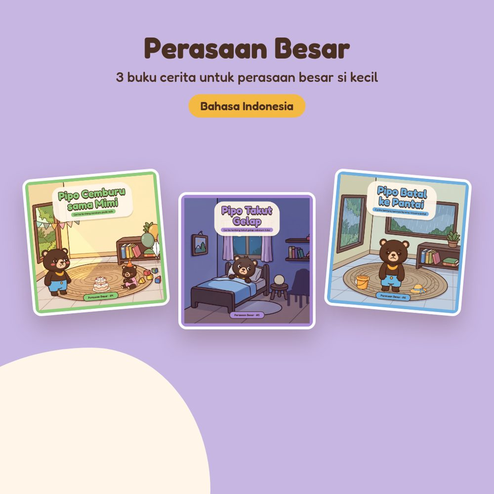

Paket Pipo Perasaan Besar

Tiga perasaan besar yang sering membuat anak (dan orang tua) kewalahan.
- Pipo Cemburu sama Mimi: cemburu pada adik
- Pipo Takut Gelap: takut tidur karena gelap
- Pipo Batal ke Pantai: kecewa karena rencana batal
Di setiap buku, Pipo merasakan dulu perasaannya di tubuh, memberinya nama, lalu menemukan sendiri cara menghadapinya. Setiap buku dilengkapi halaman diskusi untuk Ayah & Bunda dan “Coba bareng Pipo”, tiga langkah yang bisa dipraktikkan bersama.